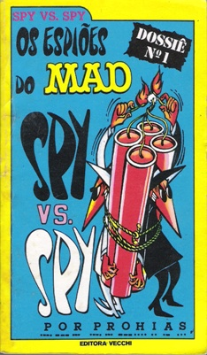
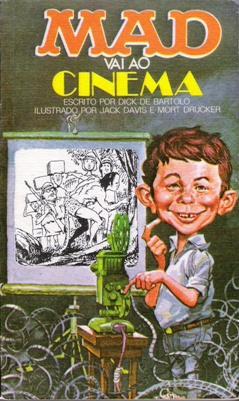

Site não oficial da Revista MAD no Brasil
Início
Edições
Internacional
História
Links
Início
/
1ª Edição
/
Livros de bolso
Livros de bolso — 1ª Edição
Coletâneas publicadas pela Editora Vecchi.
Números (103)
Especiais e extras (16)
Livros de bolso
1
Livro 1
Don Martin - As Aventuras do Capitão Klutz
2
Livro 2
O Livro MAD de Mágica e Outros Truques Sujos - Fevereiro de 1976
3
Livro 3
Viva MAD! - Maio de 1976
4
Livro 4
Don Martin Entra Bem! - Julho de 1976
5

Livro 5
Os Espiões do MAD, Dossiê N° 1 - Agosto de 1976
6
Livro 6
O Livro MAD Das Respostas Cretinas Para Perguntas Imbecis - Outubro de 1976
7
Livro 7
Don Martin Deixa Cair! - Dezembro de 1976
8

Livro 8
MAD Vai ao Cinema - Fevereiro de 1977
9
Livro 9
Loucuras do MAD! - Abril de 1977
10
Livro 10
Don Martin Vai Levando - Junho de 1977
11
Livro 11
Os Espiões do MAD, Dossiê N°2 - Agosto de 1977
12
Livro 12
O Livro MAD dos Monstros - Outubro de 1977
13
Livro 13
Don Martin Segue em Frente - Dezembro de 1977
14
Livro 14
MAD Pra Diabo - Fevereiro de 1978
15
Livro 15
Mais Respostas Cretinas Para Perguntas Imbecis - Abril de 1978
16
Livro 16
Don Martin Faz a Cabeça - Junho de 1978
17
Livro 17
Al Jaffee Funde a Cuca